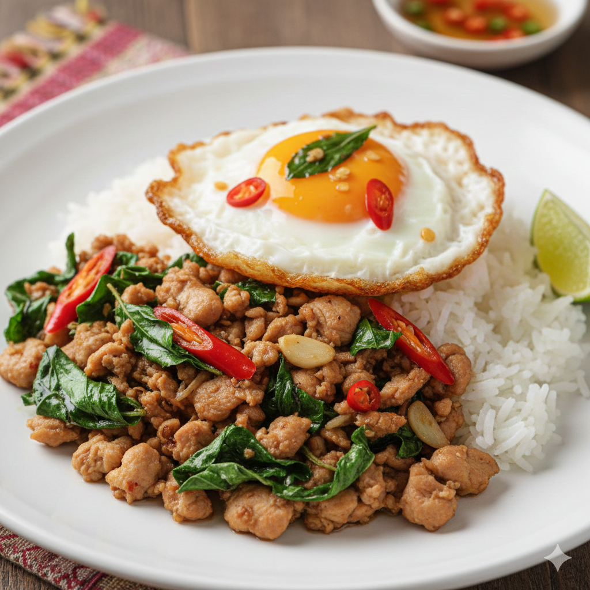

Pad Gra Pao
Home
Link to my github

Pad gra pao, or also known throughout the world as Thai holy Basil.
This dish can be served with your choice of protein, in this recipe, we will be using chicken.
Ingredients
- Birdseye chilli - 1
- Basil - 1 bunch
- Garlic - 1 or 2 cloves
- Oyster sauce - 1 tablespoon
- Soy sauce - 1 tablespoon
- Fish sauce - 1 tea spoon
- Sugar - 1/2 tea spoon
- Chicken - 200g
- Oil - 1 tablespoon
Instructions
- In a small bowl, add the soy sauce, oyster sauce, fish sauce and sugar together and put to one side.
- Slice the birdseye chilli and mince the garlic into a second bowl.
- Cut the chicken into bite sized chunks and store it into a seperate bowl.
- Remove the basil leaves from the stem and store it into another bowl
- Heat the oil into a frying pan until warm, then add the chicken, stir fry until cooked.
- Add the garlic and birdseye chilli into the pan with the chicken and cook for a few seconds until fragrant.
- Add the mixed sauces into the pan and stir to coat the chicken pieces.
- Add a little bit of water if you prefer extra sauce, then add the basil leaves to the pan. Stir all together until the leaves are wilted.
- Serve into a bowl or over cooked rice and enjoy!